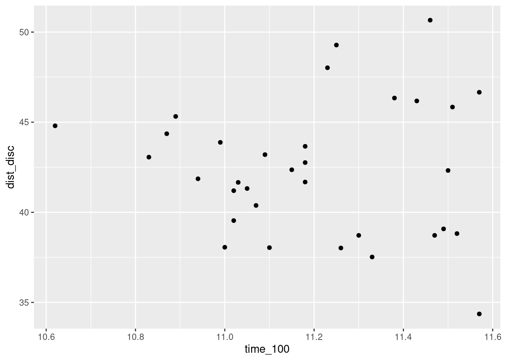
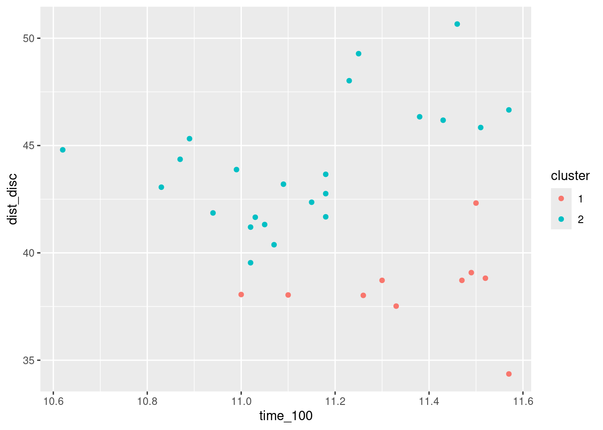
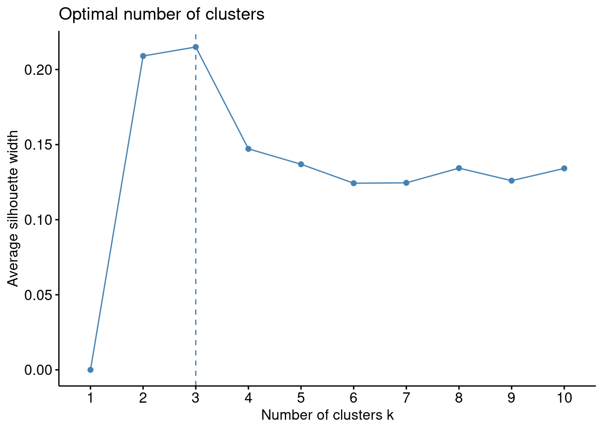
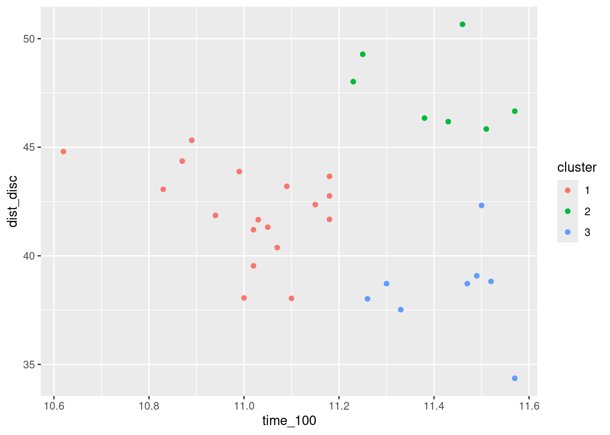
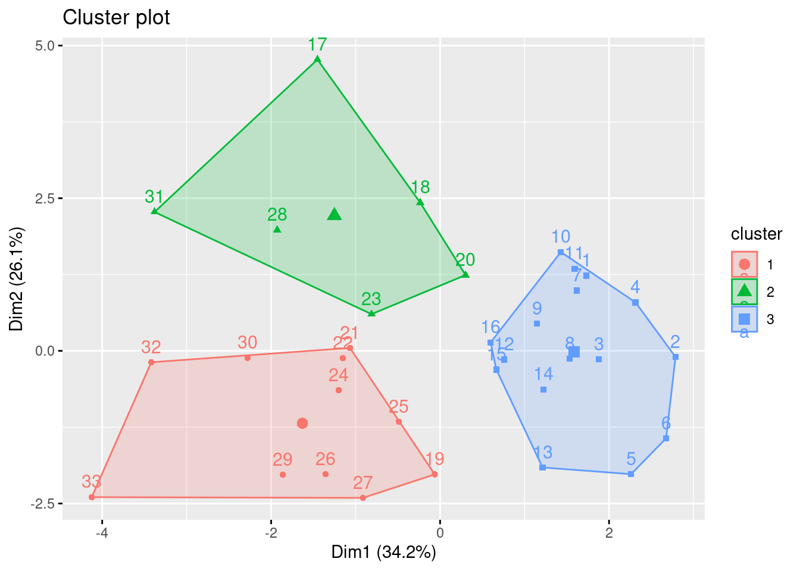
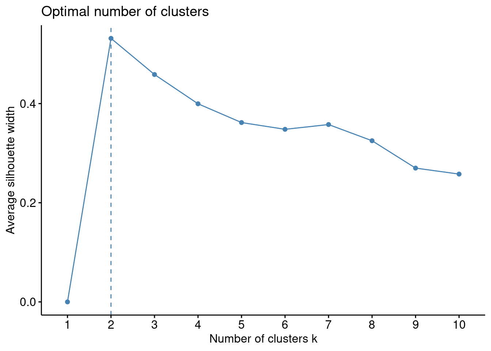
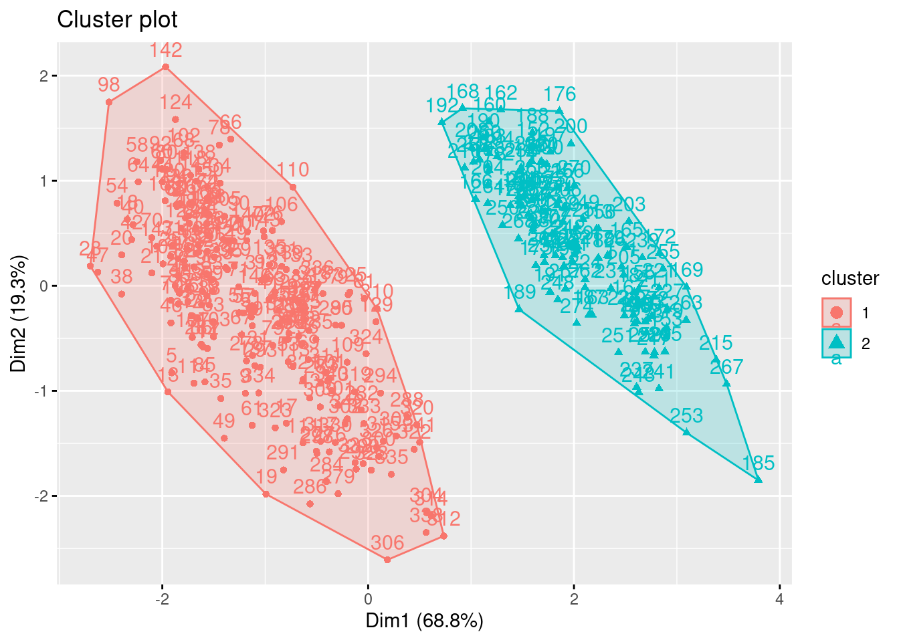

Clustering
Learning objectives
- Understand the purpose of clustering, especially k-means clustering.
- Interpret clustering results and visualize clusters.
- Evaluate the number of clusters using silhouette width.
- Recognize the role of PCA when visualizing clustering in high dimensions.
We will use a new package today containing the functions related to clustering:
Then load all packages for today:
Remember the atheletes dataset? It contains information about the performance of 33 athletes in the 10 disciplines of the decathlon at the Olympics in 1988:
# Save the database into your environment, then the dataset
data("olympic")
athletes <- olympic$tab
# Quick cleanup
athletes <- athletes |>
# Translate the variable names (from French!) and reorder
select(time_100 = `100`, time_110 = `110`,
time_400 = `400`, time_1500 = `1500`,
dist_disc = disq, dist_weight = poid,
dist_high_jump = haut, dist_long_jump = long,
dist_javelin = jave, dist_perch = perc)
head(athletes)We would like to see if these athletes cluster together in some groups.
1. Clustering
The goal of clustering is to identify observations that are alike/close to each other. We will consider the algorithm for k-means clustering:
Pick k points of the n observations at random to serve as initial cluster centers.
Assign each n-k observation to the cluster whose center is closest.
For each group, calculate means and use them as new centers.
Repeat steps 2-3 until groups stabilize.
Before we apply the algorithm, we need to prepare the data so that all variables are on the same scale.
a. Prepare the data
We should scale our variables before clustering so that variables can be comparable regardless of their scale.
# Prepare the dataset
athletes_scaled <- athletes |>
# Scale the variables
scale() |>
# Save as a data frame
as.data.frame()
# Take a look at the scaled data
head(athletes_scaled)All variables are on the same “unitless” scale!
Let’s first focus on 2 variables in the athletes dataset, time_100 and dist_disc.
Try it! Represents the relationship between the performances of the athletes in these two disciplines with a ggplot. Do you notice any groups of athletes?

Maybe two main groups? Athletes who have somewhat of a linear relationship between the two performances and the ones who excel in throwing the disc but did not run very fast.
b. Apply the algorithm
Let’s use the k-means algorithm with the kmeans(data, k = nb_clusters) function with k = 2 to find 2 clusters:
# For reproducible results: why?
set.seed(322)
# Use the function kmeans() to find clusters
kmeans_results <- athletes_scaled |>
select(time_100, dist_disc) |>
kmeans(centers = 2) # centers sets the number of clusters to find
# The output provides some information about the clusters and creates 9 different objects
names(kmeans_results)## [1] "cluster" "centers" "totss" "withinss"
## [5] "tot.withinss" "betweenss" "size" "iter"
## [9] "ifault"We will focus on the cluster object:
## 1 2 3 4 5 6 7 8 9 10 11 12 13 14 15 16 17 18 19 20 21 22
## 2 2 2 2 2 2 2 2 2 2 2 2 2 2 2 2 2 2 2 2 1 1
## 23 24 25 26 27 28 29 30 31 32 33
## 2 1 1 1 1 2 1 1 2 1 1The cluster object indicates which observations (i.e., which athlete) is in which cluster.
c. Visualize and interpret the clusters
We can save the identification of the cluster for each observation in the original dataset to manipulate the observations for each cluster:
# Consider the original dataset
athletes |>
# Save cluster assignment as a new variable
mutate(cluster = as.factor(kmeans_results$cluster)) |>
# Only keep the variables of interest
select(time_100, dist_disc, cluster) |>
head()What characteristics do the athletes share in each cluster? We can visualize the clusters and create summary statistics of each variable to understand some characteristics about the clusters.
Try it! Using the original dataset, visualize the relationship between the performances in the two disciplines for each cluster. Also find the mean and standard deviation for the performance in each discipline for each cluster. Are there any any differences between the clusters?
# Make a plot
athletes |>
# Save cluster assignment as a new variable
mutate(cluster = as.factor(kmeans_results$cluster)) |>
ggplot(aes(x = time_100, y = dist_disc, color = cluster)) +
geom_point()
# Find mean and SD
athletes |>
# Save cluster assignment as a new variable
mutate(cluster = as.factor(kmeans_results$cluster)) |>
# For each cluster
group_by(cluster) |>
# Find the mean and sd of the variables
summarize(mean_100 = mean(time_100),
sd_100 = sd(time_100),
mean_disc = mean(dist_disc),
sd_disc = sd(dist_disc))The athletes is cluster 1 have much lower values for throwing the disc and slightly higher values for running 100 meters.
We compared 2 clusters but how did we decide that our athletes should be separated into 2 groups?
d. Choose the number of clusters
Determining the number of clusters to use can be tricky. We can either consider the context or using measures such as the average silhouette width (which measures how cohesive and separated clusters are, simultaneously) for multiple values of k. A high average silhouette width indicates a good clustering structure: the observations within the groups are close to each other and the groups are very distinct from each other. We can use the function fviz_nbclust(scaled_data, clustering_algorithm, method) to compare different values of k:
# Maximize the silhouette while keeping a small number of clusters
fviz_nbclust(athletes_scaled, kmeans, method = "silhouette")
The average silhouette width seems to indicate that 3 clusters maximize the average width silhouette for the athletes_scaled.
Try it! Split the athletes in 3 clusters with kmeans. How do the athletes compare now between the 3 clusters?
# For reproducible results
set.seed(322)
# Use the function kmeans() to find clusters
kmeans_results <- athletes_scaled |>
select(time_100, dist_disc) |>
kmeans(centers = 3) # centers sets the number of clusters to find
# Make a plot
athletes |>
# Save cluster assignment as a new variable
mutate(cluster = as.factor(kmeans_results$cluster)) |>
ggplot(aes(x = time_100, y = dist_disc, color = cluster)) +
geom_point()
# Find mean and SD
athletes |>
# Save cluster assignment as a new variable
mutate(cluster = as.factor(kmeans_results$cluster)) |>
# For each cluster
group_by(cluster) |>
# Find the mean and sd of the variables
summarize(mean_100 = mean(time_100),
sd_100 = sd(time_100),
mean_disc = mean(dist_disc),
sd_disc = sd(dist_disc))The athletes is cluster 1 have the lowest values for running 100 meters. The athletes in cluster 2 have the greatest values for throwing the disc but also for running 100 meters. The athletes in cluster 3 have low values for throwing the disc and high values for running 100 meters (they don’t perform as well as the other athletes).
2. Include more variables in clustering
What if we would like to consider more variables to compare the athletes? We can technically use all the variables in the athletes dataset!
From above, the average silhouette width indicates that we should consider 3 clusters:
# For reproducible results
set.seed(322)
# Use the function kmeans() to find clusters
kmeans_results <- athletes_scaled |>
kmeans(centers = 3)Visualize the clusters with fviz_cluster().
# Let's visualize our data with cluster assignment
fviz_cluster(kmeans_results, data = athletes_scaled)
What do the labels of the x-axis and y-axis indicate? Why?
It is impossible to visualize the clusters across the 10 variables so R performed PCA!
What characteristics do the athletes share within each cluster? Let’s describe each cluster with the mean:
# Create basic summary statistics for each cluster in original units
athletes |>
# Save cluster assignment as a new variable
mutate(cluster = as.factor(kmeans_results$cluster)) |>
# For each cluster
group_by(cluster) |>
# Find the mean of all variables
summarize_all(mean)Looking at these means, is there a cluster of athletes that performs consistently better for timed disciplines? worse?
Athletes in Cluster 3 have the lowest mean for all timed disciplines (better performers) while Cluster 2 has the highest mean for the timed events (not as good performers).
What about for other events?
Cluster 1 has the lowest mean for all distance disciplines (except for high jump). Cluster 2 has the highest mean for throwing the disc and weight, while Cluster 3 has the highest means for high jump, long jump, javelin and perch.
Note: The k-means algorithm relies on computing distances (typically Euclidean distance) between data points to assign them to clusters. This kind of distance calculation only makes sense when the variables are numeric and continuous.
Your turn!
Let’s practice some clustering on the penguins dataset.
# Save the object as a dataframe
penguins <- as.data.frame(palmerpenguins::penguins)
# Take a quick look
head(penguins)- Only consider the variables about size measurements and ignore missing values. Prepare the data for clustering by scaling these variables. Name the resulting dataset as
penguins_scaled.
# Prepare the dataset
penguins_scaled <- penguins |>
# Only keep the measurements
select(bill_length_mm, bill_depth_mm, flipper_length_mm, body_mass_g) |>
# Ignore missing values
drop_na() |>
# Scale the variables
scale() |>
# Save as a data frame
as.data.frame()- How many clusters should we find?
# Maximize the silhouette while keeping a small number of clusters
fviz_nbclust(penguins_scaled, kmeans, method = "silhouette")
Looks like we should look for 2 clusters of penguins.
- Apply the algorithm with the corresponding number of clusters. Visualize the clusters with
fviz_cluster.
# For reproducible results
set.seed(322)
# Use the function kmeans() to find clusters
kmeans_results <- penguins_scaled |>
kmeans(centers = 2) # centers sets the number of clusters to find
# Visualize our data with cluster assignment
fviz_cluster(kmeans_results, data = penguins_scaled)
- Add a variable to the original
penguinsdataset (but ignoring missing values for the size measurements) that describes which cluster each penguin belongs to. Compare the number of penguins of each species per cluster. Do you notice anything? Also compare the number of penguins of each island per cluster and of each sex per cluster.
# Create basic summary statistics for each cluster in original units
penguins_cluster <- penguins |>
filter(!is.na(bill_length_mm),
!is.na(bill_depth_mm),
!is.na(flipper_length_mm),
!is.na(body_mass_g)) |>
# Save cluster assignment as a new variable
mutate(cluster = as.factor(kmeans_results$cluster))
# Species per cluster
table(penguins_cluster$cluster, penguins_cluster$species)##
## Adelie Chinstrap Gentoo
## 1 151 68 0
## 2 0 0 123##
## Biscoe Dream Torgersen
## 1 44 124 51
## 2 123 0 0##
## female male
## 1 107 107
## 2 58 61Penguins in the second cluster are all from the same species, the Gentoo! This is an example of how clustering can be used to distinguish between different species! They are also all from the Biscoe island. Each cluster has about the same ratio of female/male penguins.
Recommended Resources
- Worksheet keys are posted at the end of the week on Canvas under Programming Tools.
- Recommended readings Clustering
- Learn more about kmeans